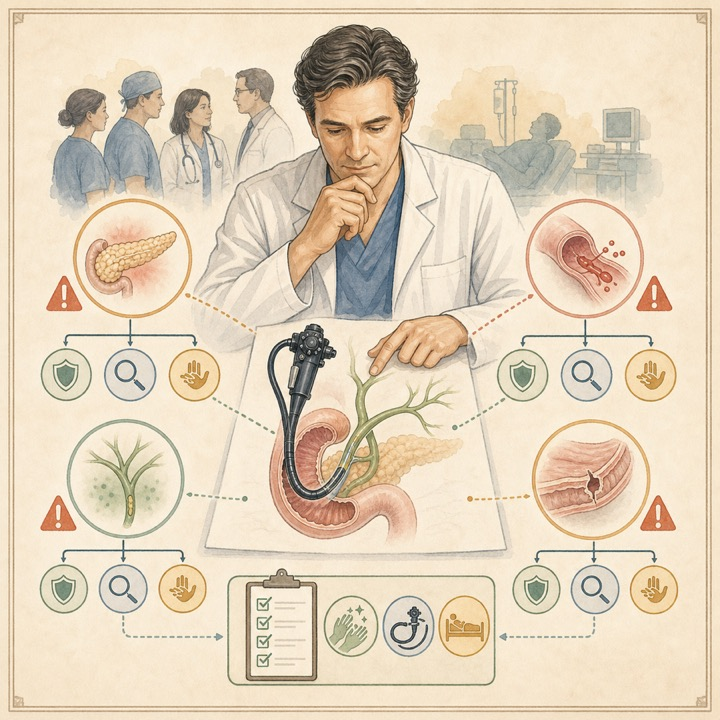

Adverse events associated with ERCP and ERCP-related procedures；ERCPおよび関連処置に伴う有害事象
Gastrointestinal Endoscopy / IF 8.0 / Q1ASGE Standards of Practice CommitteeForbes N, et al.Published: 2026-06-30PMID: 42383968
日本語: PEP、出血、感染・胆管炎、穿孔などのERCP関連有害事象について、定義、危険因子、予防、早期診断、治療を体系的にまとめたASGEの標準文書です。ERCPを安全に実施するための基本事項を確認できる重要資料です。
English: This ASGE Standards of Practice document summarizes the definitions, risk factors, prevention, early recognition, and management of pancreatitis, bleeding, infection, perforation, and other ERCP-related adverse events.
